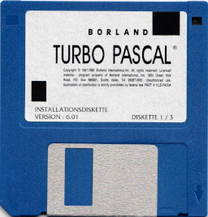

February 2024
The first part in a series on concurrency management in multi-threaded Java programs. This article deals with monitor objects and their use for demarcation of non-concurrent sections.
Categories: software development, Java
Modern portable media players are generally smartphones without an antenna. So why not repurpose a real smartphone as a media player?
Categories: general computing
They don't make 'em like that any more: Borland Turbo Pascal 7
Why half a million people learned to program in Pascal, when you'd think they had no earthly reason to.
Categories: TDMTLTAM, retrocomputing